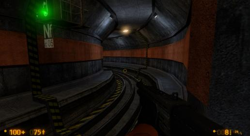

Text, do you think you could add captions for the “SHOOT HIM IN THE FACE!” scene?
My PC is being a bit funny. It won’t take a screenshot of the game. When you get outside there’s a security office where you have to press a button to open a door. When you’ve done that a sniper appears. The security office has a purple stripe on the outside at the top.
When you get to the rail car that takes you to apprehension chapter the turntable has a lot of purple. I also found some purple for the nearby rock. Later on there’s purple. In the chapter apprehension there’s some purple flooring and more purple by the helicopter.
I noticed one of the lockers has P. Gabriel on it. Is this a reference to Peter Gabriel one of the founding members of Genesis?
Why? 
P.S. Also, does anyone want Drums & Riffs converted to .wav? Pretty big, but original quality is preserved well enough. And it sounds great in-game. I’ll just leave it here.
https://www.mediafire.com/listen/k4cegh1tugqfyt6/postlaunch.wav
https://www.mediafire.com/download/k4cegh1tugqfyt6/postlaunch.wav
In A1, you need to switch the power on to switch the rail, AND to move the crane. I suggest leaving the rail switch active. Lets the player understand the rail switching mechanic that much earlier, and doesn’t associate rail switches with power boxes.
So that anyone who has trouble hearing can know what they’re saying.
Eh, I figured that part out really quickly. No need to coddle the player.
Thanks ODB. I really wanted to hear this on the C map.
Additional Feedback For OaR Uncut B1 Beta2 Map
- At map’s start, this wall cladding https://i.imgur.com/grDXCYj.jpg doesn’t look quite right https://i.imgur.com/BNlMwSt.jpg
- To save on resources, remove this bundle of i-beams https://i.imgur.com/rzbfgBr.jpg. The room has enough props already, and there’s another bundle in the next room. Also, remove this bundle of i-beams in the next tunnel https://i.imgur.com/4NqUx7N.jpg. Again, this area is sufficiently stocked with props (too many!) and it looks odd placed here. This bundle actually interferes with clearly viewing the scripted security guard-HECU tram scene.
- This floor turret https://i.imgur.com/NjnMhg1.jpg and https://i.imgur.com/MUiWjh4.jpg is too vulnerable and should be moved so that it’s not so easy to take out.
- I added this to my previous feedback after closing it. To avoid it possibly being overlooked, I’m posting it here again. Consider placing this bundle of i-beams across the forks of the nearby forklift truck https://i.imgur.com/83U6ESH.jpg
- There’s a texture seam issue here https://i.imgur.com/rj0Y9N3.jpg and https://i.imgur.com/5iGw2sJ.jpg
- Consider removing this wall support trim https://i.imgur.com/6ZvHEnT.jpg and https://i.imgur.com/EuKbckA.jpg and https://i.imgur.com/BosBLoB.jpg. Since there’s no wall to support, it’s not needed.
- In this area https://i.imgur.com/iFSkuGi.jpg, please apply to this door https://i.imgur.com/aNjhBRD.jpg the same technique you used here, with the wall cladding https://i.imgur.com/bksRHKo.jpg, except in gray color. It looks more polished.
- The three doors on the upper level of the room that leads to the tram turntable, have a lighting issue https://i.imgur.com/vrnNdjR.jpg and https://i.imgur.com/QhlCSVP.jpg and https://i.imgur.com/25NMnhO.jpg and https://i.imgur.com/hgnBRqO.jpg
- More texture seam issues at the tram turntable:
a) Here https://i.imgur.com/UCDc0W1.jpg and https://i.imgur.com/n2yreml.jpg
b) And here https://i.imgur.com/hCP55dc.jpg, opposite from each other https://i.imgur.com/FIYCWpS.jpg and https://i.imgur.com/tLuuzSF.jpg
c) And at this corner https://i.imgur.com/8SE0lOH.jpg - There are some texture seam issues at the tram elevator https://i.imgur.com/0XXOEsh.jpg
a) One here https://i.imgur.com/tXxV9Rh.jpg
b) And two cases here https://i.imgur.com/SNRqzwR.jpg
c) Another one here https://i.imgur.com/xzXhLhR.jpg
d) And finally, two instances here https://i.imgur.com/ZLJtLGk.jpg - In this area hear https://i.imgur.com/eWBHIFN.jpg, consider removing this storage racking https://i.imgur.com/wdzt2Mi.jpg. Realistically, to access the heavy items on this racking, you’d need a forklift truck. If one could even get into this hallway, there’s not enough room for it to maneuver and get at the materials. It’s also odd to have large heavy items stored in this hallway, especially when there are better/proper storage areas nearby https://i.imgur.com/UBeBd6j.jpg and https://i.imgur.com/D2DkmIm.jpg, that benefit from way easier access. The same problems exist with the two similar storage racks in the upstairs office, next to the security room https://i.imgur.com/MF4WvZE.jpg
- In this area https://i.imgur.com/g9aMbA9.jpg, consider removing these two crates https://i.imgur.com/2PMqONT.jpg as they shouldn’t be found on this upper floor.
- Thanks for rotating this hand truck https://i.imgur.com/d0i7O76.jpg, but it needs to be moved out from the corner a little bit. Thanx, Text.
- In this area https://i.imgur.com/2IqJJwu.jpg, should these elevator mechanical rails extend to the ceiling? https://i.imgur.com/y92jCFE.jpg
{kind=link}
{kind=link}
{kind=link}
{kind=link}
{kind=link}
{kind=link}
{kind=link}
{kind=link}
{kind=link}
{kind=link}
{kind=link}
{kind=link}
{kind=link}
{kind=link}
{kind=link}
{kind=link}
{kind=link}
{kind=link}
{kind=link}
{kind=link}
{kind=link}
{kind=link}
{kind=link}
{kind=link}
{kind=link}
{kind=link}
{kind=link}
{kind=link}
{kind=link}
{kind=link}
{kind=link}
{kind=link}
{kind=link}
{kind=link}
{kind=link}
{kind=link}
{kind=link}
{kind=link}
{kind=link}
{kind=link}
Additional Feedback For OaR Uncut B2 Beta2 Map
- At map’s end https://i.imgur.com/RadmYnv.jpg, extend the wall cladding to the edge of the wall https://i.imgur.com/boTh1aB.jpg
and for the opposite side too https://i.imgur.com/qW4oHgS.jpg. Besides matching the width of the wall curb below https://i.imgur.com/TQPYHxN.jpg, it coincides with the same implementation used at the start of B1 map https://i.imgur.com/JoHhx2l.jpg
{kind=link}
{kind=link}
{kind=link}
{kind=link}
{kind=link}
Ciao for now.
Thanks for this, ODB!
Coddling is having objective arrows placed everywhere, and someone on Gordon’s radio telling him to get the power back on to move the crane. This is just more consistent game design.
Text, I’ve amended my “Additional Feedback For OaR Uncut B1 Beta2 Map” in post #2195, and added in some more items.
Please re-review it if you’ve already done so. Thanx.
Hope your progress towards the RC release is proceeding smoothly.
Wow. “Drums and Riffs” works very well with the rocket launch scene. Makes it feel like a victory. Thanks for enabling that option in map C, Text!
Feedback For Oar Uncut A1 Beta 2 Map
- At map’s start https://i.imgur.com/Ptz4OGI.jpg, extend this wall curb to the end of the sidewalk https://i.imgur.com/4SKKdaW.jpg
- There are several issues in this new area https://i.imgur.com/X5TE1uU.jpg
a) The railings for the upper levels https://i.imgur.com/vcriC5i.jpg, differ in color https://i.imgur.com/jdTiCI8.jpg. Brown color should be used.
b) These support beams have caution stripes https://i.imgur.com/sMRpdTh.jpg that all the others don’t have https://i.imgur.com/8XtEVbs.jpg
c) This one support beam has a caution stripe https://i.imgur.com/mEaq34S.jpg, that all the others don’t have. - The placement of bundles of i-beams in this manner is overly repeated throughout the maps https://i.imgur.com/VQlt4OD.jpg. Sorry, but it looks out of place and too contrived. It’s unrealistic that anything would be placed there, especially something as awkward, cumbersome and heavy as a bundle of i-beams. Please consider removing them, and other similar placements in OaRU.
- This area has a couple of problems https://i.imgur.com/UnbUiqO.jpg:
a) Extend this wall cladding to the metal frame https://i.imgur.com/yU5w2Jg.jpg, like the other side https://i.imgur.com/bbxFIXv.jpg
b) This wall curb should continue across here as one full continuous section https://i.imgur.com/1cVqmOW.jpg
{kind=link}
{kind=link}
{kind=link}
{kind=link}
{kind=link}
{kind=link}
{kind=link}
{kind=link}
{kind=link}
{kind=link}
{kind=link}
{kind=link}
{kind=link}
Feedback For Oar Uncut A2 Beta 2 Map
- The upper area where the HECU elevator encampment is, has a couple of issues https://i.imgur.com/ejULDku.jpg:
a) Should these metal strips be visible? https://i.imgur.com/ffojrq9.jpg and https://i.imgur.com/OQ8fPEJ.jpg
b) The handrails on this upper level should be changed to the standard brown color https://i.imgur.com/zB6i0Rl.jpg - Sorry Text, but this light in Locker Room B should be removed https://i.imgur.com/coWyPxG.jpg. I reported earlier that its position should be fixed. It was rotated 90 degrees with half of it buried in the wall. I assumed that a light should be here, but later found that there shouldn’t be lights of this type in the locker rooms. I changed my feedback shortly after posting it, but obviously not in time for you to see the change.
- At map’s end, the handrails for these upper levels also need to be changed to the standard brown color https://i.imgur.com/gab5r8F.jpg
- At map’s end, in this area https://i.imgur.com/R7BunH8.jpg, the first two wall lights don’t appear to be centered between the tunnel support frames https://i.imgur.com/TqsteV6.jpg left of enter, and https://i.imgur.com/N5IsLUR.jpg right of center. Please check the others in this area.
{kind=link}
{kind=link}
{kind=link}
{kind=link}
{kind=link}
{kind=link}
{kind=link}
{kind=link}
{kind=link}
Conclusion Of Feedback For Oar Uncut A1 & A2 Beta 2 Maps
I had to come back to this because in my last few playthrough, I was actually able to beat the boxes to the first intersection. There has got to be a solution to this.
I can understand that the current box setup is unfixable. I can respect that. Because you’re right, it would look fairly bad if you had them teleporting into the middle.
Which means finding workarounds. I was thinking, if you can’t make the boxes appear sooner, then make the player see them later. At first I was going to suggest lengthening very beginning hall, so that the player would need to travel further before turning the corner and seeing them (stalling for time, if you will). This would have required editing of both B maps. And also lengthening the hall at the beginning of C to compensate for changed distances.
.
.
.
But then I remembered this little dealy: https://youtu.be/W_fAhM99e3M?t=4m45s
There are tripmines between the electricity puzzle and the crate room. And often you have to slowdown/stop to take care of them. Therefore, place tripmines on that corner. Two or three oughta do it.
It’ll buy enough time for those boxes to get to where they need to be, it’s easy to implement, and it’s canon too.

Brilliant solution. Simply brilliant, .RK (unless Text finds a problem with it, then it’s a stupid idea, stupid, stupid)[/SIZE] 
Well played through it.
I really loved the A map improvements with the smaller fights that are no longer overwhelming, and all the little changes that just improved it completely (for example that new staircase to the controls, or the entry points to the fight in that area).
Nothing really to add except for 1 small thing that I think has been mentioned before.
If possible, when going outside, can you make it so that the music only starts once you’re on the tram?
It feels weird having it go off if you go through the door, which I assume most people would check out after the fight, since you need to look for the garage door button.
At the least, only have it go off in that small area if you’re climbing up the crane or something, since the music kind of introduces the area so to speak. So from the crane you’d take it all in, otherwise you’re just seeing smaller bits and pieces whilst navigating the containers.
Just a suggestion, not a desperate need to be fixed or anything.
Actually, would it be possible for the 2 lines with moving boxes to be connected, so that it’s the same boxes going around in a loop? The 2 crate lines could be going in opposite directions. Therefore the boxes wouldn’t start way back.
Big thanks to everyone who’s played the Beta so far! I haven’t has as big a bite from the community outside of here as I’d have liked actually, if I’m honest. That has been a little disappointing. So I just have to hope that everyone else is waiting for the final version. But thanks testers, it’s been great fun so far. The final release really isn’t far off. I need to get this behind me now so I can move on with my life!
Glad you enjoyed them. I’ll number your points and reply to them using the same number so it’s easier to see what I’m talking about.
-
I feel the darkness is essential to the scene at the start of that song. Adding more light to that area would hurt the song’s dramatic impact, in my mind. I’d rather not. I’d imagine most players would have their torches on anyway.
-
It is trivial, but is also a fairly easy fix, so I can tweak it a bit more.
-
The complaint before was that it was way too loud. I adjusted the volume from its previous value of 7, to 6. So it’s either gonna be too quiet, or too loud. I think I’d rather settle for too quiet.
-
Yeah, I’ll fix that. Easy.
-
I’ll probably tweak that a little more based on ODB’s legit complaint.
-
Yeah, it is too easy now. Will try and make it a bit harder for the next version without making it frustrating. It’s tough to make a fight hard without being frustrating. It was too frustrating before, the MP5 Marines just ate your health away.
-
A hasn’t been decompiled, so I can’t make any changes to that. The way I see it, the track signals are consistently inconsistent. A B and C has Black Mesa’s style, my maps have mine. Because they’re consistently inconsistent, the player could guess that the Black Mesa style is the “newer” tracksignals, which could have been installed where my “older” style tracksignals had gone faulty, or something like that. I’d rather it was this way, than having A be the ONLY map with Black Mesa style tracksignals. Not ideal, I know, but definitely preferable to decompiling A.
-
It requires 3 entities if I remember correctly. A2 is so close to the entity limit that I can’t even spare that much for the prompt. That 50 Cal is more decorative than anything else really, it doesn’t serve the player any purpose at all, unlike the one on B which is used to kill a wave of Marines.
Those upper areas are detailed enough that going by them while ascending on a Barnacle is okay, but not detailed enough that I’d be comfortable with letting the player run around there. If I allowed the player to run around up there, I’d have to add lots of detail, which is mostly unnecessary and would fill up the map. In addition, it would be a bit weird for a player going around up there to see that every single door is locked. When the area is inaccessible, the player can accept in terms of realism why all the doors are “locked,” because they can’t get up there anyway. But in an explorable area, it would feel a bit unbelievable if every single door on 3 levels was locked and inaccessible. So I’d have to add more side areas. It’s just a lot of work for very, very little payoff. So it won’t happen, sorry.
Will fix this. Bad oversight on my part.
It’s a render order error on the part of the engine, due to both the blood and the stripes being info_overlays. The render orders are set correctly in the editor, so I don’t think there’s anything I can do about this, very annoyingly. I MAY have a creative workaround for this, I might give it a try.
Relax, I’m going to fix it. I just haven’t got around to it yet. The turrets on B2 should work properly in this way, though. They’re set up like the BM ones are.
Purple on a rock tells me that something’s weird with your BM, as I’ve done NOTHING to any rocks on the C map, and most of your purple textures are on the C map, where no textures have been modified at all. And Apprehension, I have done nothing to that either.
And yes, P. Gabriel is Peter Gabriel. I’m a huge, huge fan. Just thought I’d put it in there to reference him, and see if anyone picked up on it. You’re the first, so far! T. Booth is Tim Booth, of James.
It’s almost like it was made for that scene 
Good idea. I can do that. As I said though, there’s no way to actually fix it due to the way I’ve set up the tracktrains and the tracks for the moving crates (which is definitely the IDEAL, most efficient setup). It’s a decent workaround though.
Not everyone will have the tram at this point. They still need to have the moment too. I think having the moment be a bit dulled by going out that door is still better than not having the moment at all.
Can I make a suggestion Text for the final release, on A2, the first vort vs hecu should be changed just slightly. I like the way you have it now its just simpler and can live with it. But could you spawn the vorts on the far platform(view pic), leave the hecu in the middle (like now), leave the 50cal hecu/vort the same. I think the scene would play out better. The two factions would be busy with each other while you sneak over and man the 50 to finish off the remainder of enemies. The way it ends now they always retreat to the 50 and it makes it kinda hard to use. doing this would make the battle more original to HL. With that large board you have laying across the tracks it makes it easier for the vorts to cross over.
{kind=link}